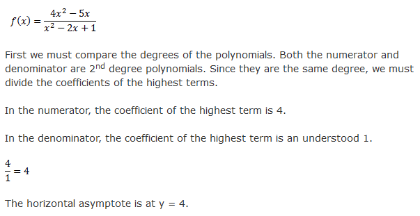
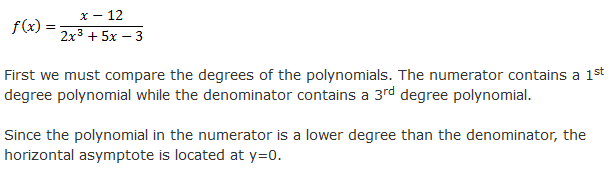
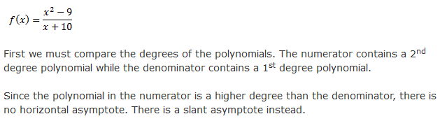

Rules for Finding the Horizontal Asymptote
- If both Polynomials are the same degree, divide the coefficients of the highest degree terms.

- If the polynomial in the numerator is a lower degree than the denominator, the x-axis (y = 0) is the horizontal asymptote.

- If the polynomial in the numerator is a higher degree than the denominator, there is no horizontal asymptote, there is a Slant asymptote.

Video Help for Horizontal Asymptotes
How to find a Slant Asymptote
Important You can only find the Slant asymptote if the degree of the numerator is excactly one higher than the degree of the denominator
Dealing with Cube Roots and Asymptotes